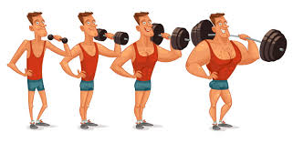
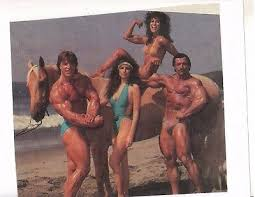
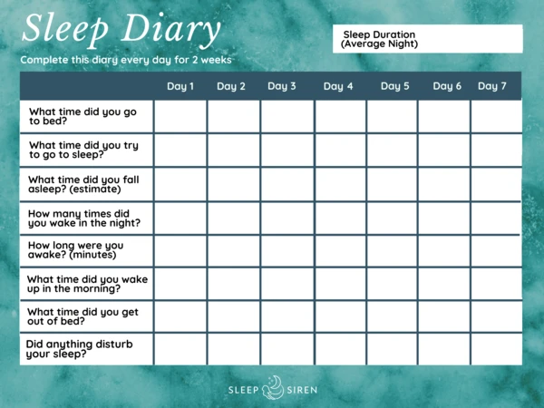
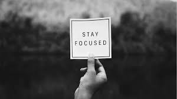

How to overcome a bodybuilding plateau?
So there you are beating yourself to death every day in the gym but the gains are nowhere to be seen, you might be thinking what am I doing wrong. If you are consistent with your workouts and your diet and rest and still not seeing any gains or progress, chances are that you have been hit by a fitness or a bodybuilding plateau.
What exactly are these fitness plateaus? As I have mentioned many times earlier the human body is a wonderful machine, it will adapt to anything you throw at it but sometimes it adapts so smoothly with your efforts that it stops showing progress.
Fitness plateaus are defined as milestones that are formed over a period when your body stops responding to your workouts and diet regime, it adapts so well to stress and change that it no longer advances to the next stage. Most of the intermediate's go through this phase of total confusion when they can't figure out what they are doing wrong. But why do intermediates suffer from these plateaus more than the beginners, it's because most muscle development happens in the early phases when you start exercising and your body is not accustomed to the stress and pain, it fights by growing itself to counteract against the stress you are putting on it but as you adapt, your body also adapts and eventually if you keep putting the same amount of effort as before your body stops responding?
So let's discuss the ways to break a fitness plateau if you ever encounter one and you surely will do because we know that you are a hard-working individual.
Focus on progressive overload.
Set clear goals.
Experiment and adapt.
Take a break.
Watch your sleep schedule.
Change your perspective
Progressive overload is a technique where you keep increasing the overall stress you put in your workouts over a period. Progressive overload is the best method to help ensure that you keep growing throughout your fitness journey but this method should be implemented wisely with focussing on increasing weight slowly over a period. What most people do is that they start increasing weight so swiftly at the expense of proper form and technique that they end up hurting their body.

You should have well-defined goals as to what you want to achieve because there are different methods in terms of overloading for endurance and strength. If your goal is to gain strength than you should opt for low reps and heavyweight and if you are shooting for endurance and hypertrophy than you should opt for lightweight and high reps with lots of volumes.
No matter what the exercise there exists different techniques to break the plateau but always keep in mind the further you go the harder it becomes and the tougher you become.
Try out new combinations of sets and repetitions, throw in some supersets and pyramid sets, tweak up the overall volume( volume = sets * reps), rotate your resting days, increase your calorie and protein intake. Experimentation is the key to breaking the fitness plateau because each person carries a unique body with different genetics and metabolic's, while some methods are effective for one person, the same method doesn't reap good results for another.
Maintain a journal where you can write your observations and results from the experiments to help you better understand what works for you.
If you feel like you are training way too much take a break and indulge in other things. Generally, after every 2-3 months of intense training, you should take a short break of 1-2 weeks to allow your body to settle.
Taking a week off from the gym allows the muscle to shrink and lose hypertrophy along with the water that is stored in the muscle and when you resume training the hypertrophy again bounce in faster than the last time allowing the muscle to grow bigger.

A fitness plateau is an indicator that you have been working hard. Rest your body for a minimum of 7-8 hours at night for maximum benefits, you do not want to overtrain your body, you might not be making gains because of overtraining. Overtraining and fitness plateaus are completely different things, learn to differentiate between what is hindering your gains, and act appropriately. Look for signs of overtraining like stress, fatigue, lack of sleep, fall in metabolism, etc.
If you find any of the above-mentioned signs, overtraining is to be blamed and this should call for some class A rest schedule.

Keep in mind these fitness plateaus act as levels in your progress. With each level, it will demand a stronger and better you. It will differentiate you based on a beginner, intermediate, and advanced athlete. Work your way up to the top slowly and help others with the knowledge you acquired through your journey.
